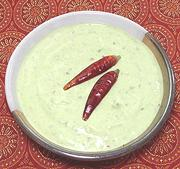

|
Chili, Cilantro, Yogurt SaladIndia - Tamil Nadu - Pachaimilagai-kothamalli thayir pachadi | ||||
| Makes: Effort: Sched: DoAhead: |
2 cups ** 25 min Yes |
Pachadis are similar to the Raitas of northern India, refreshing yogurt and vegetable salads. This one makes a nice dip, spread, or side dish - chili heat very adjustable. | |||
|
1-1/2 1 ------- 1 1/4 2 ------- 1/2 1 1/8 sprig 1 2 ------- |
c t --- c T --- t t t t --- |
Yogurt, plain Salt -- Paste Chili Serrano (1) Cilantro Water -- Tempering Mustard Seed (2) Urad Dal (3) Asafoetida (4) Curry Leaves (5) Red Chili, dry (6) Ghee (7) ----------- |
Prep - (15 min)
|